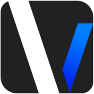

어크로스, AI에 김치 추천을 물었더니…질문 하나에 달라지는 브랜드 경쟁력
어크로스가 운영하는 AI 가시성 지수 젠랭크가 챗GPT와 제미나이, 네이버 AI 등 8개 AI 서비스의 김치 및 김치냉장고 추천 답변을 분석했다. 포기김치 추천에서는 8개 서비스 모두 종가를 언급했지만, 가성비 김치 질문에서는 이마트 자체 브랜드인 노브랜드 포기김치가…

HOT오늘도 글국내 스타트업·벤처 전문 매체입니다.
마지막 2026-11-25 (KST), 30일 30건 최근 12건에서 협찬·원고료 문구 없음
어크로스가 운영하는 AI 가시성 지수 젠랭크가 챗GPT와 제미나이, 네이버 AI 등 8개 AI 서비스의 김치 및 김치냉장고 추천 답변을 분석했다. 포기김치 추천에서는 8개 서비스 모두 종가를 언급했지만, 가성비 김치 질문에서는 이마트 자체 브랜드인 노브랜드 포기김치가…
응급 상황 대응 헬스케어 스타트업 위코멧이 기업·기관 특화 응급 대응 솔루션 ‘원 케어’를 통해 B2B·B2G 시장을 공략한다. 원 케어는 자동심장충격기의 소모품 교체 및 장비 이상 알림 기능과 심폐소생술 자기주도훈련 서비스를 하나로 통합한 솔루션이다. 학습관리시스템…
AI 영상인식 전문기업 에이아이매틱스가 CES 2027에서 제조 현장의 외관검사 업무를 자동화하는 AI 비전검사 플랫폼 ‘AIM-T1’을 선보인다. AIM-T1은 소프트웨어 기반으로 검사 기준을 변경하고 양품 샘플을 활용해 신규 검사 모델을 생성할 수 있으며, 3㎛급…
글로벌 여행 플랫폼 클룩이 한국인 이용자의 일본 호텔 예약 데이터를 분석한 결과, 올해 10월 1일부터 11월 15일까지 예약 건수가 전년 동기 대비 13.9% 증가했다. 온천 명소 6곳의 예약은 여름 대비 153.8%, 설경 명소 5곳은 61.9% 늘었으며 유후인이…
헥토이노베이션이 카이아 DLT 재단과 블록체인 지갑 인프라 및 스테이블코인 결제·정산 사업 협력을 위한 업무협약을 체결했다. 양측은 헥토그룹 임직원 복지포인트 ‘헥토코인’을 활용해 디지털자산의 발행부터 지급, 결제, 소각까지 전 과정을 제한된 환경에서 검증해 왔다.…
와콤코리아가 11월 26일부터 29일까지 서울 코엑스에서 열리는 제25회 서울디자인페스티벌에 참가한다. ‘차원이 다른 와콤’을 테마로 전시 부스를 운영하고 현장 구매 고객에게 특별 할인 혜택과 무빙크패드 전용 스탠드 증정 프로모션을 제공한다. 수험표를 인증한 액정타블…
AI 기반 커뮤니케이션 교육 기업 크디랩이 금융권 맞춤형 상담 훈련 솔루션 ‘쏘카인드’의 기업형 온프레미스 모델을 출시했다. 기업 내부망에서 개인정보를 사전 처리하고 외부 고성능 언어모델을 활용하는 하이브리드 구조를 적용해 실제 고객 특성을 반영한 상담 훈련 환경을…
글로벌 영상 AI 플랫폼 모픽이 영화·드라마 등 영상 콘텐츠의 해외 배급과 현지화를 지원하는 AI 더빙 툴 ‘모픽 더빙’을 출시했다. 90개 이상의 언어를 지원하며 원본 배우의 음색을 반영한 더빙 음성 생성과 립싱크, 다인물 대사 처리 기능을 갖췄다. 제작사가 검수한…
웨어러블 로봇 하이퍼쉘이 MBC ‘기분 좋은 날’에 등장해 시니어의 보행과 야외 활동을 지원하는 착용형 로봇 기술을 소개했다. 하이퍼쉘은 사용자의 움직임에 맞춰 보조 동력을 제공하며 산책과 등산 등 다양한 아웃도어 활동에 활용할 수 있도록 설계됐다. 국내 총판인 브이…
프롭핀테크 기업 엘엔디씨가 부동산 중개업무 지원 서비스 ‘부동산렛츠(RETS)’를 운영하는 넥스텝코리아와 업무협약을 체결했다. 양사는 AI 기반 부동산 사업성 분석 솔루션 랜드업과 매물정보 서비스를 연계해 중개업 종사자의 물건 비교 및 고객 상담 업무를 지원한다. 서…
AI 기반 모빌리티 리스크 전문기업 스몰티켓이 ‘코리아 핀테크 위크 2026’에서 자동차 사고 분석 및 과실비율 판단 지원 솔루션 ‘SMT Ratio’를 공개한다. SMT Ratio는 블랙박스 영상과 사고 관련 정보를 분석하고 관련 기준과 사례를 검토해 손해사정사의…
중소벤처기업부가 2026년 명문장수기업 수여식을 개최하고 중소기업 10개사와 중견기업 2개사 등 총 12개사를 신규 선정하거나 자격을 연장했다. 올해 기업들은 수십 년간 축적한 기술력을 기반으로 친환경 에너지, 항공·방산, 의료기기, 식품 등 다양한 산업에서 사업 경…
구글이 한국야구위원회(KBO)와 2027 KBO 리그 공식 검색 파트너십 협약을 체결했다. 양측은 구글 검색과 제미나이의 AI 기술을 활용해 프로야구 팬들이 선수와 구단, 경기 기록 등 다양한 정보를 편리하게 탐색할 수 있도록 지원한다. 스프링캠프와 유소년 야구 육성…
전자문서·전자계약 솔루션 기업 포시에스가 대만 현지 파트너사 글로벌디지털과 함께 유안타은행의 페이퍼리스 브랜치 프로젝트를 수주했다. 2022년 국내 유안타증권에 이어 한국과 대만에서 동일 금융그룹의 디지털 창구 구축 사업을 수행하게 됐다. 이번 프로젝트에는 전자서식뿐…
의료 AI 스타트업 스튜디오키코의 앰비언트 AI 스크라이브 ‘니어닥’이 출시 6개월 만에 563개 의료기관에 도입되며 누적 진료 기록 114만5,868건을 달성했다. 자체 개발한 의료 특화 추론 엔진을 기반으로 진료 대화를 구조화하고 의료진 개개인의 기록 방식을 반영…
도도한콜라보와 리맨, CJ대한통운이 공동 제작한 디지털기기 자원순환 캠페인 영상 ‘리플러스’가 2026 CSR 필름 페스티벌 어워드에서 환경 임팩트 부문 대상인 기후에너지환경부 장관상을 수상했다. 경기도사회적경제원의 지원을 받아 제작한 영상은 디지털기기 기부부터 개인…
에듀테크 기업 위키드스톰의 AI 기반 학습경험플랫폼 ‘LearnHubble AI’가 2026 아시아 에듀테크 서밋 글로벌 어워드 최고상인 플래티넘에 선정됐다. LearnHubble AI는 국제표준 xAPI를 기반으로 여러 교육 서비스에 분산된 학습 기록을 연결하고 A…
교육 전문 사회적협동조합 인사이드아웃과 개인안전 솔루션 기업 세이픽스가 치안·개인안전 교육 확산을 위한 업무협약을 체결했다. 양 기관은 교육 기획·운영 역량과 개인안전 교육 경험을 결합해 청소년부터 어르신까지 대상별 맞춤형 교육 프로그램과 온라인 콘텐츠를 공동 개발한…
킨드레드 벤처스가 SBVA, DS투자증권과 함께 23일 몬드리안 서울 이태원에서 ‘AI Wave: Seoul 2026’을 개최했다. 실리콘밸리와 한국의 AI·로보틱스·딥테크 창업자 및 투자자들은 AI 추론, 맞춤형 반도체, 피지컬 AI, 컴퓨팅 및 전력 인프라 분야의…
AI 인베스트테크 기업 머니스테이션이 홍콩 핀테크위크에 참가해 자체 개발한 AI 투자분석 엔진 ‘시그널엔진’을 소개했다. 홍콩 선화그룹과 공식 개념검증에 착수했으며 현지 증권사 2곳과도 기술 실증 추진을 위한 비밀유지계약을 체결했다. 시그널엔진은 글로벌 금융시장 데이…
페리지에어로스페이스가 독자 개발한 라이너리스 극저온 복합재 추진제 탱크 제작 기술이 우주항공청의 우주신기술로 지정됐다. 지난 6월 액체로켓엔진 재생냉각 연소기 전기성형 공정 기술에 이은 두 번째 지정이다. 이번 기술은 금속 라이너를 제거한 탄소복합재 구조를 기반으로…
크래프톤이 모델 설계부터 학습까지 전 과정을 자체 수행한 30B급 거대언어모델 ‘라온-1 미니’의 정식 버전을 공개했다. 전문가 혼합 구조와 자체 선형 어텐션 기술을 결합해 추론 비용과 응답 속도를 최적화했으며, 연속 대화 지시 이행 평가에서 해외 동급 규모 모델 6…
마음인베스트먼트가 한국방위산업지원센터, 피에스캐피탈파트너스, 피에스인베스트먼트, 린벤처스와 함께 오는 12월 11일 방산기업 IR 데모데이 ‘카운터 디펜스’를 개최한다. 방산기업과 방산 시장 진출을 준비하는 신기술 기업 15개사를 발굴해 산업 전문가의 평가와 성장 단…
핀다가 대원저축은행의 사명을 핀다저축은행으로 변경하고 본점을 경북 경주에서 강원 춘천으로 이전한다. 2027년 초에는 상담·심사·여신관리 등 주요 은행 업무를 AI 중심으로 재설계한 ‘AI Native 뱅크’ 핀다뱅크를 선보일 예정이다. 금융기관과의 제휴 상품 및 비…
플리토의 AI 통번역 솔루션 보글 스테이지와 보글 존의 올해 합산 도입 실적이 약 950건에 이를 전망이다. 컨퍼런스 특화 솔루션 보글 스테이지는 IBM과 구글 등 글로벌 기술기업의 행사에 활용되며 올해 약 850건의 도입 실적을 기록할 것으로 예상된다. 상담·안내…
숨랩스가 다양한 영상·이미지·음성 생성 AI 모델을 통합한 콘텐츠 제작 플랫폼 ‘숨AI’를 출시하고 한 달 만에 누적 결제액 10억원을 돌파했다. 같은 기간 약 2만5,000명의 가입자와 3,300명 이상의 유료 고객을 확보했으며, 전체 결제액의 60%가 미국에서 발…
모빌리티 플랫폼 휘슬을 운영하는 모노플랫폼이 한국도로공사와의 협력 성과를 인정받아 중소벤처기업부 주관 ‘윈윈아너스’ 우수사례로 선정됐다. 양사는 미납통행료 수납 표준플랫폼과 민간 앱을 연계해 공공서비스 시장 진입장벽을 낮추고 운전자의 납부 편의성을 개선했다. 2024…
후시파트너스가 한국가스공사, 전국버스운송사업조합연합회와 협력해 수소버스 운행에 따른 온실가스 감축량 산정 방법론을 개발한다. 수소 생산·공급 데이터와 버스 운행정보를 AI 탄소 플랫폼에 연계해 운수사의 감축실적을 외부사업 인증실적으로 전환하는 것이 목표다. 후시파트너…
넥스원소프트가 통합인증 서비스 ‘넥스비싸인’의 재외국민 인증 절차를 개선했다. 이용자 정보를 먼저 입력하면 사용 가능한 인증서를 확인할 수 있도록 인증 방식을 변경해 재외동포365민원포털과 대한민국 아포스티유의 이용 편의성을 높였다. 올해 10월 기준 재외국민 인증서…
글로벌 AI 오디오 기업 일레븐랩스가 크리에이티브망고와 제52회 서울독립영화제가 공동 주최하는 ‘더 콜라보레이션 2026’에 기술 파트너로 참여했다. 안상훈 감독과 박현신 AI 감독이 협업한 단편영화 ‘더 시그널’에 AI 오디오 제작 도구를 제공했다. 이번 프로젝트에…
한국인공지능·소프트웨어산업협회(KOSA)가 국내 AI·소프트웨어 기업 경영진 100여 명이 참석한 가운데 제40회 런앤그로우 포럼을 개최했다. 최지혜 서울대학교 소비트렌드연구센터 연구위원은 ‘트렌드 코리아 2027’을 주제로 강연하며 독자적인 판단과 실행력을 갖춘 존…
포시에스가 ‘2026 제조혁신코리아’에 참가해 기업 내부의 다양한 데이터를 통합하는 AI 에이전트 ‘아이오즈에카’를 소개했다. 에카는 생산 문서와 이메일, ERP 시스템 등에 분산된 정보를 연결해 설비 정비 이력 조회, 품질 불량 원인 분석, 생산 실적 확인 등 제조…
제이앤피메디가 오는 12월 1일 한국임상개발협회 연말학술대회에 참가해 통합 약물감시 솔루션 ‘메이븐 세이프티’를 소개한다. 메이븐 세이프티는 국제 표준 E2B(R3) 기반 안전성 데이터 통합과 AI 문서 자동 입력, 시그널 탐지 기능을 제공한다. 미국 FDA의 이상사…
틱톡이 보이그룹 코르티스와 함께 공식 팬덤 ‘코어’의 1주년을 기념하는 스페셜 라이브 프리미어를 25일 오후 9시 30분 진행한다. 코르티스 전용 검색 허브를 통해 공식 영상과 라이브 하이라이트, 팬 제작 콘텐츠 등을 제공하며 팬 참여형 이스터에그와 사연 소개 이벤트…
네이버클라우드가 한국수력원자력, 한전KDN과 업무협약을 체결하고 원전 분야에 특화된 AI 전환 체계 구축에 나선다. 2024년 하이퍼클로바X 기반 한수원 생성형 AI 플랫폼을 구축한 경험을 토대로 AI 에이전트 중심의 업무혁신을 추진한다. 네이버클라우드는 현업 담당자…
바이브컴퍼니가 아이지에이웍스와 공동으로 MCP 기반 소비 트렌드 분석 리포트 ‘TREND CROSS 2026’을 공개했다. 550억 건 이상의 소셜 데이터와 3,400만 고객의 앱 이용 행태, 하루 평균 6,000억원 규모의 카드 결제 데이터를 활용해 AI·유통·금융…
클라우데라가 기업의 데이터 및 AI 주권 확보를 지원하는 종합 솔루션 ‘클라우데라 디지털 소버리니티’를 발표했다. 자체 데이터 관리 기술과 미스트랄 AI의 오픈웨이트 모델을 결합해 온프레미스, 소버린 클라우드, 폐쇄망 등 다양한 환경에서 데이터 이동 없이 AI를 운영…
에이블리가 최근 한 달간 뷰티 소비 데이터를 분석한 결과, 셀프뷰티 관련 검색량은 전년 동기 대비 286%, 홈케어 관련 상품 거래액은 81% 증가했다. 마데카소사이드와 펩타이드 등 특정 성분을 중심으로 한 스킨케어 상품 수요가 늘었으며, 두피케어 관련 상품 거래액도…
오늘의집이 ‘2026 올해의집’ 어워드 본선에 진출한 크리에이터 50인을 공개했다. 총 1,535명이 출품한 1,739건의 응모작을 대상으로 미감과 실용, 가치관 등 세 가지 기준을 적용해 본선 진출작을 선정했다. 회원 투표는 12월 4일까지 진행되며, 투표 결과와…
트러스테이와 샤픈고트가 AI 기반 공동주택 재난안전 서비스 개발 및 공동 사업화를 위한 업무협약을 체결했다. 샤픈고트의 재난안전 제품 트리토나 시리즈에 트러스테이의 주거 플랫폼 노크타운과 영상 AI 솔루션 노키비전을 결합해 위급 상황 감지부터 초기 대응까지 지원하는…